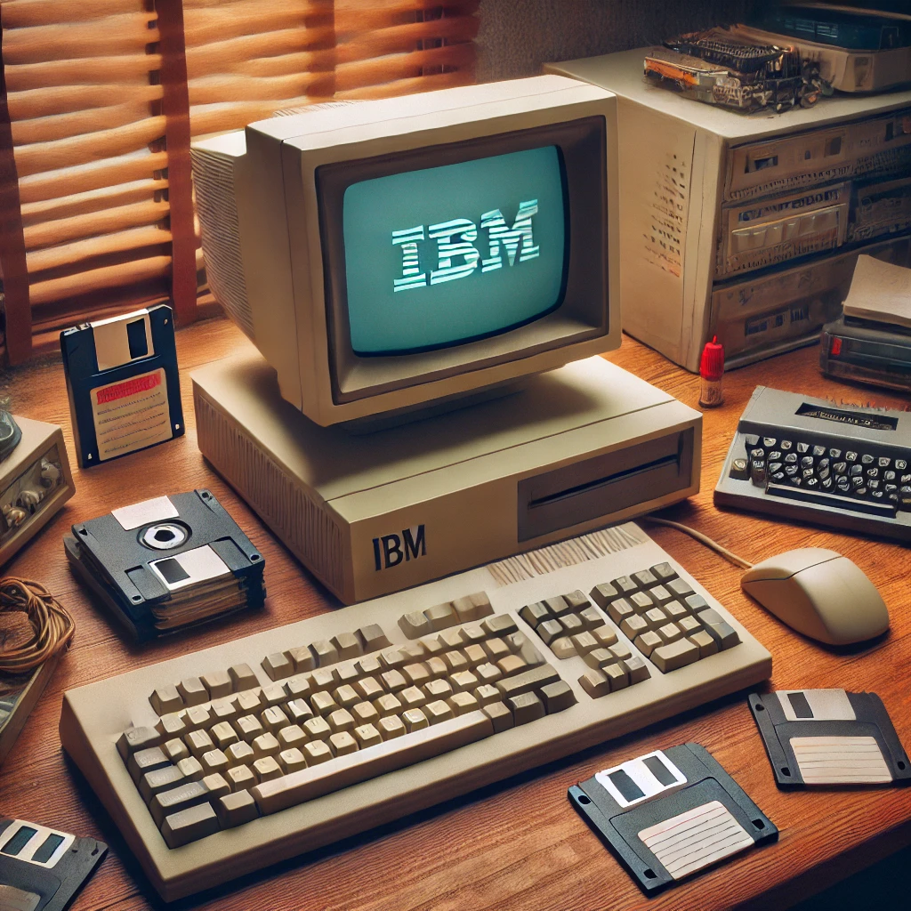

Ontdek de fascinerende geschiedenis van computers, van de logge machines uit het verleden tot de gestroomlijnde apparaten die we vandaag gebruiken. Deze site is jouw super makkelijke gids voor het begrijpen van de evolutie van personal computers, het leren over iconische modellen en het waarderen van de technologie die de weg vrijmaakte voor moderne innovaties.
In de jaren '70 maakten computers de overstap van gigantische machines die hele kamers vulden, naar kleinere, toegankelijkere apparaten voor persoonlijk gebruik. De eerste personal computers waren revolutionair en brachten rekenkracht naar huizen en kleine bedrijven. Hier zijn enkele opmerkelijke vroege computers:
De jaren '80 zagen een explosie in personal computing toen grote merken betaalbare en gebruiksvriendelijke computers lanceerden. Deze machines werden een vast onderdeel van huishoudens en effenden de weg voor de toekomst van technologie. Hier zijn enkele populaire modellen uit de jaren '80: